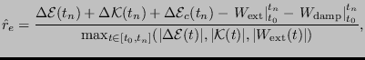
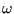
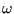

Keyword type: step
This procedure is used to perform a pure heat transfer analysis. A heat transferanalysis is always nonlinear since the material properties depend on thesolution, i.e. the temperature.
There are nine optional parameters: SOLVER, DIRECT, STEADY STATE, FREQUENCY,MODAL DYNAMIC, STORAGE, DELTMX, TIME RESET and TOTAL TIME AT START.
SOLVER determines thepackage used to solve the ensuing system of equations. The following solverscan be selected:
Default is the first solver which has been installed of the following list:SGI, PARDISO, SPOOLES and TAUCS. If none is installed, the default is the iterative solver, which comes with the CalculiXpackage.
The SGI solver should by now be considered as outdated. SPOOLES is very fast, but has noout-of-core capability: the size of systems you can solve is limited by yourRAM memory. With 2GB of RAM you can solve up to 250,000 equations. TAUCS isalso good, but my experience is limited to the  decomposition, whichonly applies to positive definite systems. It has an out-of-core capabilityand also offers a
decomposition, whichonly applies to positive definite systems. It has an out-of-core capabilityand also offers a  decomposition, however, I was not able to run either ofthem so far. Next comes the iterative solver. If SOLVER=ITERATIVE SCALING isselected, the pre-conditioning is limited to a scaling of the diagonal terms,SOLVER=ITERATIVE CHOLESKY triggers Incomplete Choleskypre-conditioning. Cholesky pre-conditioning leads to a better convergence andmaybe to shorter execution times, however, it requires additional storageroughly corresponding to the non-zeros in the matrix. If you are short ofmemory, diagonal scaling might be your last resort. The iterative methodsperform well for truly three-dimensional structures. For instance,calculations for a hemisphere were about nine times faster with the ITERATIVESCALING solver, and three times faster with the ITERATIVE CHOLESKY solver thanwith SPOOLES. For two-dimensional structures such as plates or shells, theperformance might break down drastically and convergence often requires theuse of Cholesky pre-conditioning. SPOOLES (and any of the other direct solvers)performs well in most situations with emphasis on slender structures butrequires much more storage than the iterative solver. PARDISO is the Intel proprietary solver and is to my knowledgepresently the fastest.
decomposition, however, I was not able to run either ofthem so far. Next comes the iterative solver. If SOLVER=ITERATIVE SCALING isselected, the pre-conditioning is limited to a scaling of the diagonal terms,SOLVER=ITERATIVE CHOLESKY triggers Incomplete Choleskypre-conditioning. Cholesky pre-conditioning leads to a better convergence andmaybe to shorter execution times, however, it requires additional storageroughly corresponding to the non-zeros in the matrix. If you are short ofmemory, diagonal scaling might be your last resort. The iterative methodsperform well for truly three-dimensional structures. For instance,calculations for a hemisphere were about nine times faster with the ITERATIVESCALING solver, and three times faster with the ITERATIVE CHOLESKY solver thanwith SPOOLES. For two-dimensional structures such as plates or shells, theperformance might break down drastically and convergence often requires theuse of Cholesky pre-conditioning. SPOOLES (and any of the other direct solvers)performs well in most situations with emphasis on slender structures butrequires much more storage than the iterative solver. PARDISO is the Intel proprietary solver and is to my knowledgepresently the fastest.
If the MATRIXSTORAGE option is used, the conductivity and capacity matrices arestored in files jobname.con and jobname.sph (specific heat), respectively. These are ASCIIfiles containing the nonzero entries (occasionally, they can be zero;however, none of the entries which are not listed are nonzero). Each lineconsists of two integers and one real: the row number, the column number andthe corresponding value. The entries are listed column percolumn. In addition, a file jobname.dof is created. It has as many entries asthere are rows and columns in the stiffness and mass matrix. Each linecontains a real number of the form ``a.b''. Part a is the node number andb is the global degree of freedom corresponding to selected row (in this case0 for the thermal degree of freedom). Notice thatthe program stops after creating these files. No further steps aretreated. Consequently, *HEAT TRANSFER, MATRIXSTORAGE only makes sense as the laststep in a calculation.
The parameter DIRECT indicates that automatic incrementation should beswitched off. The increments will have the fixed length specified by the useron the second line.
The parameter STEADY STATE indicates that only the steady state should becalculated. For such an analysis the loads are by default applied in a linear way. Other loadingpatterns can be defined by an *AMPLITUDE card. If theSTEADY STATE parameter is absent, the calculation is assumed to be timedependent and a transient analysis is performed. For a transient analysis thespecific heat of the materials involved must be provided and the loads are bydefault applied by their full strength at the start of the step.
In a static step, loads are by default applied in a linear way. Other loadingpatterns can be defined by an *AMPLITUDE card.
The parameter FREQUENCY indicates that a frequency calculation shouldbe performed. In a frequency step the homogeneous governing equation issolved, i.e. no loading applies, and the corresponding eigenfrequencies andeigenmodes are determined. This option is especially useful if the heattransfer option is used as an alias for true Helmholtz-type problems, e.g. inacoustics. The option FREQUENCY cannot (yet) be applied to cyclic symmetrycalculations.
The parameter MODAL DYNAMIC is used for dynamic calculations in whichthe response is built as a linear combination of the eigenmodes of thesystem. It must be preceded by a *HEAT TRANSFER, FREQUENCY,STORAGE=YES procedure, eitherin the same deck, or in a previous run, either of which leads to the creationof a file with name jobname.eig containing the eigenvalues and eigenmodes ofthe system. A MODAL DYNAMIC procedure is necessarily linear and ideally suitedof problems satisfying the classical wave equation (Helmholtz problemcharacterized by a second derivative in time, thus exhibiting a hyperbolicbehavior), e.glinear acoustics.
The parameter STORAGE indicates whether the eigenvalues, eigenmodes, mass andstiffness matrix should be stored in binary form in file jobname.eig forfurther use in a *MODAL DYNAMICS or *STEADY STATE DYNAMICS procedure. Defaultis STORAGE=NO. Specify STORAGE=YES if storage is requested.
The parameter DELTMX can be used to limit the temperature change in twosubsequent increments. If the temperature change exceeds DELTMX the incrementis restarted with a size equal to  times DELTMX divided by thetemperature change. The default for is 0.85, however, it can be changedby the *CONTROLS keyword. DELTMX is only active in transient calculations. Default value is  .
.
The parameter TIME RESET can be used to force the total time at theend of the present step to coincide with the total time at the end of theprevious step. If there is no previous step the targeted total time iszero. If this parameter is absent the total time at the end of the present step is thetotal time at the end of the previous step plus the time period of the presentstep (2nd parameter underneath the *HEAT TRANSFER keyword). Consequently, if the timeat the end of the previous step is 10. and the present time period is 1., thetotal time at the end of the present step is 11. If the TIME RESET parameteris used, the total time at the beginning of the present step is 9. and at theend of the present step it will be 10. This is sometimes useful iftransient heat transfer calculations are preceded by a stationary heattransfer step to reach steady state conditions at the start of the transientheat transfer calculations. Using the TIME RESET parameter in the stationarystep (the first step in the calculation) will lead to a zero total time at the start of the subsequentinstationary step.
Finally, the parameter TOTAL TIME AT START can be used to set the total timeat the start of the step to a specific value.
First line:
Second line if FREQUENCY nor MODAL DYNAMIC is not selected:
Example:
*HEAT TRANSFER,DIRECT .1,1.
defines a static step and selects the SPOOLES solver as linear equation solverin the step (default). The second line indicates that the initial time increment is .1 and the total step time is 1. Furthermore, the parameter DIRECT leads to a fixed time increment. Thus, if successful, the calculation consists of 10 increments of length 0.1.
Example files: beamhtcr, oneel20fi, oneel20rs.
Second line if FREQUENCY is selected:
Example: *HEAT TRANSFER,FREQUENCY 8
defines a frequency step for the heat transfer equation. The eight lowesteigenvalues and corresponding eigenmodes are calculated. Notice that for theheat equation the following relation applies between the eigenvalue  and eigenfrequency :
and eigenfrequency :
| (477) |
If, on the other hand, the heat transfer option is used as an alias for theHelmholtz equation, e.g. for acoustic problems, the same relationship as inelastodynamics
| (478) |
applies.
Second line if MODAL DYNAMIC is selected:
Example files: aircolumn.